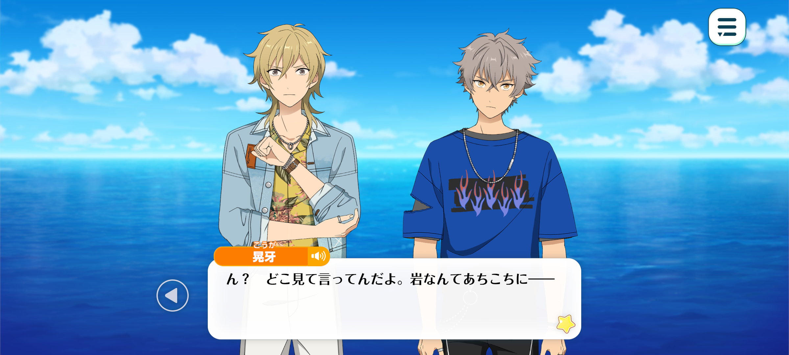
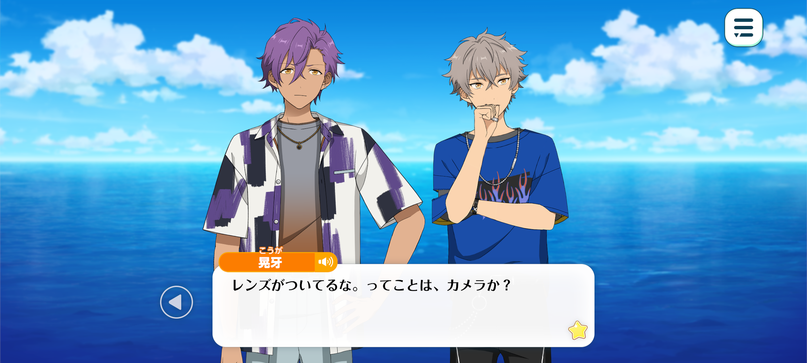
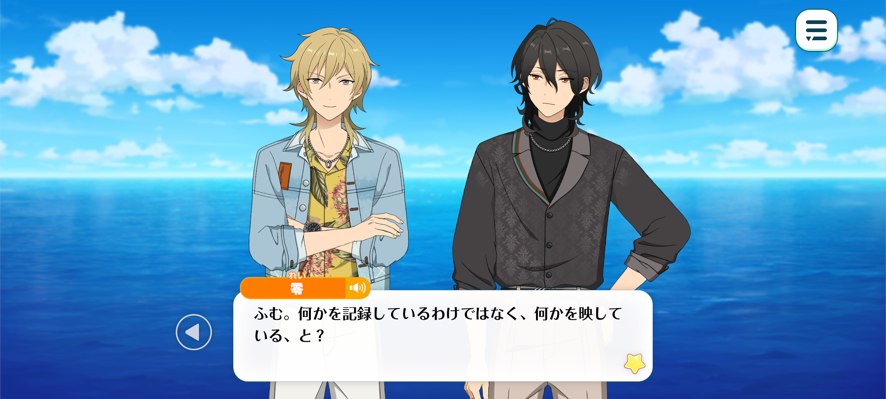
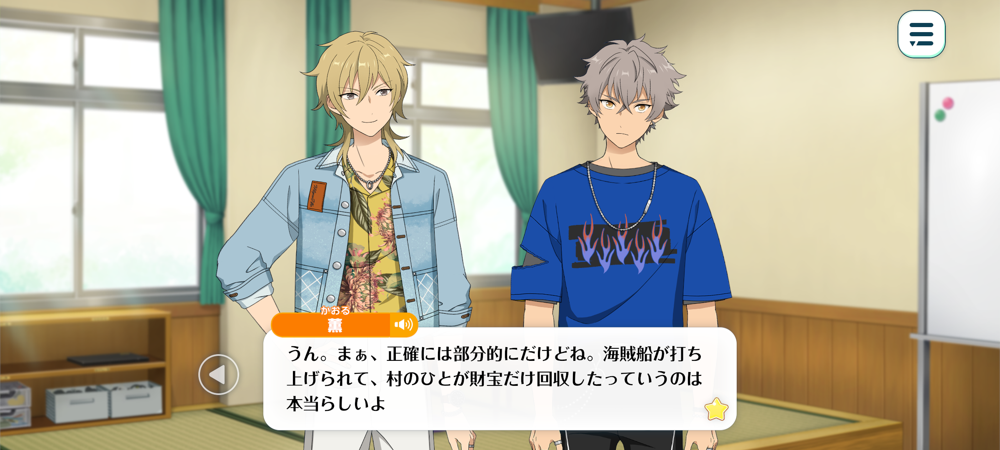
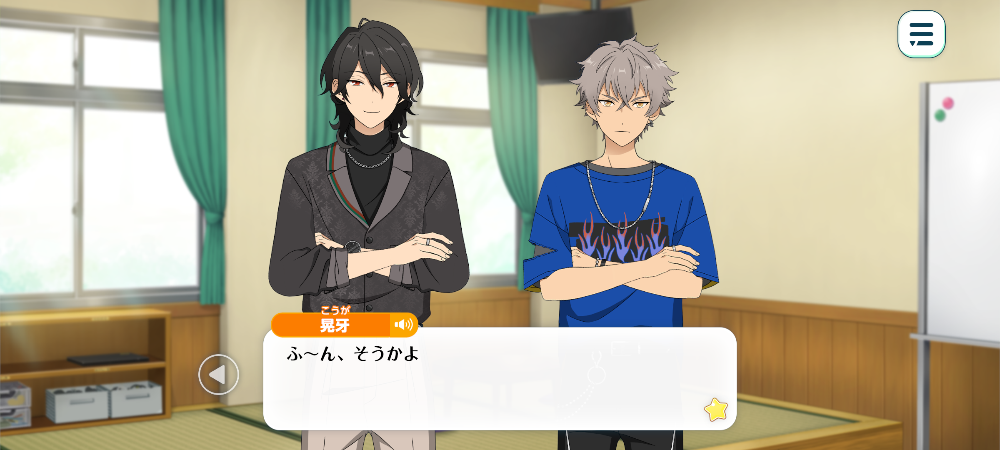
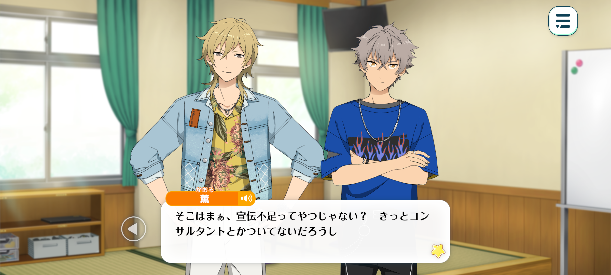

Velvet Ship
Haul Home The Sheets / Chapter 4



Kaoru: What the…? Doesn't that rocky outcrop look a little strange to you?
Koga: Huh? What're you lookin' at? There's rocks all over the place!
Adonis: That one, over there. There's a peculiar-looking box floating beside it.
Rei: My, my. It looks rather like a nesting box, doesn't it? Though I daresay it's a touch too large to serve such a purpose.
Kaoru: I wonder what something like that is doing out here… Shall we take a closer look?
Time: Ten minutes later
Location: By the rocky outcrop

Adonis: …Hmm. It appears to be some sort of machine. I can hear a faint humming sound coming from it.
Koga: There's a lens attached to it. Maybe it's a camera or somethin'.
Maybe the townspeople use it to keep an eye on conditions out at sea. It's got a solar panel, so that'd make sense.
Though, in a place like this, where it gets foggy so easily, it doesn't seem like the smartest setup.
—Uwa!?
Adonis: Are you okay, Oogami? What’s wrong?
Koga: I-I’ve got a ghost ship… in my hands…!
Adonis: …? Surely you are mistaken?
Koga: I’m tellin’ you, I’m not! I saw it, clear as day!
Kaoru: …Koga-kun, mind if I take a look?
(It looks like a camera from the front, but something about its shape seems off…)
(There's a lamp and a heat vent on the back… Could it be…?)
It's not a camera… I think it's a projector.

Rei: I see! So it's not recording anything, but projecting an image instead.
Koga: Projector? Then the thing that showed up in my hand was…?
Kaoru: Yup! When you hold your hand out in front of the lens, look at what happens.
Adonis: …! A pirate ship has appeared in Hakaze-senpai's hand!
Kaoru: Sorry to spoil the fun, but…
Judging by the position of these rocks and the angle of the light, I think the "ghost ship" we saw the other day was being projected in exactly the same way.
The farther the light travels from the projector, the larger the image becomes. So I'm guessing the fog acted as a screen, allowing the image to appear in the distance.
They use tricks like that in live shows, too, you know? Projecting images onto smoke screens and things like that. It's probably the same principle.
Rei: I see… Then perhaps this little spectacle was deliberately arranged for us to discover?
Kaoru: Yup. It's not every day you stumble across a projector in a place like this.
I can't say what the person behind all this is after, but one thing's for sure: there's no ghost ship full of undead sailors wandering around out there.
Rei: Kuku… It seems the mystery surrounding this ghost ship is slowly but surely unravelling.
Time: On the day of the fan appreciation live
Location: In a room within the town’s town hall

Koga: —So you're sayin' this whole ghost ship thing was made up!?
Kaoru: Well, sort of. There's some truth to the story. Apparently, a pirate ship really did wash up here once, and the villagers looted it
Maybe they felt guilty about what they'd done, because after that, people started reporting sightings of a ghost ship. Eventually, they even held a proper funeral for the dead sailors. There's a stone monument on the beach that was apparently erected in memory of the crew.
The part that was made up was the ghost ship showing up again and again. Turns out, the projector was just something someone had left out there.
Adonis: Even so… It seems a little too convenient to be mere coincidence…?
Rei: Indeed. I, too, suspected from the outset that someone had orchestrated the whole affair.
However, after speaking with someone at the town hall, I discovered that it was all simply a coincidence. As Kaoru-kun explained, the legend does have some basis in truth.
After these sightings began, the townsfolk grew wary of going out to sea on foggy days, fearing that the ghost ship might appear.
It seems this custom has persisted into the present day, evolving into a rather convenient excuse to take the day off!
Of course, there were some fishermen who paid the legend no heed and continued to venture out to sea. But, as fate would have it, one day they, too, encountered the ghost ship.
And what a dreadful day it was! The fog was particularly thick, and the poor fishermen were so terrified that their knees trembled beneath them. They wept and cried out that the ship from the legend had appeared before their very eyes!
Word of the sighting soon spread, and before long, the sailors were too frightened to venture out to sea on foggy days.
Naturally, this began to threaten their livelihoods, so the local authorities launched an investigation. And that, it seems, was when they discovered the projector.

Koga: Whoa, seriously?
If they found the thing, why didn't they just get rid of it? Especially if it was scarin' all the fishermen.
Kaoru: Well, apparently, projectors like that are pretty hard to come by around here, so they figured it'd be a waste to just throw it away.
So they started using it for a little "test of courage" instead. Turns out, the locals took to it a lot more than anyone expected.
Since there was already a long-standing custom of staying off the sea when it was foggy, and the projector wasn't actually hurting anyone, they decided to keep the tradition going as part of a local revitalisation project.
Koga: Town revitalisation...? Can't say it's doin' a very good job. There's hardly anyone here!

Kaoru: Well, I reckon that's more a problem with how they're promoting it. They probably don't have access to consultants and that kinda thing.
Some of the remote islands around here are actually pretty well-developed. Of course, the more tourists you attract, the greater the chance of trouble, too.
Maybe it's precisely because this place is so peaceful that a creepy ghost ship legend stands out all the more. In the end, it's up to the locals to decide what they want to do with it.
And we shouldn't forget that we outsiders might've been a little tactless ourselves.
Rei: Indeed. We have cast the light of our curiosity upon the cherished illusions of this port town, exposing them for what they are.